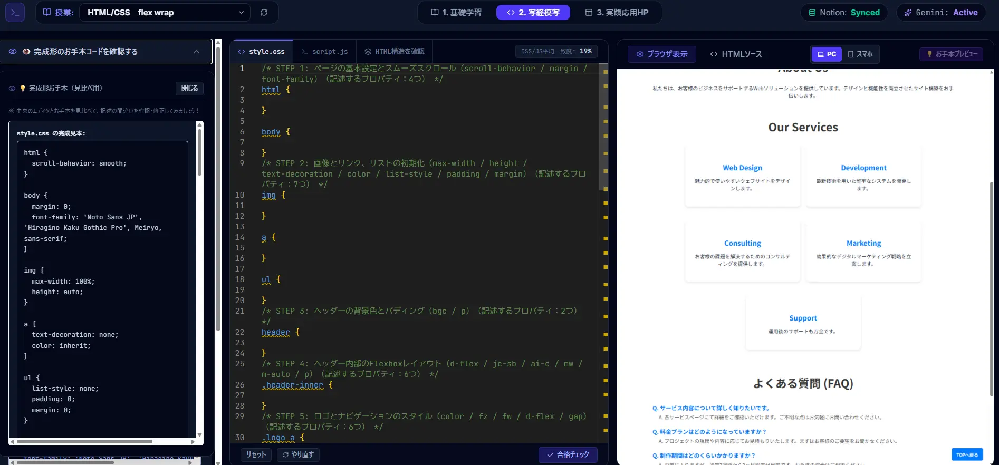
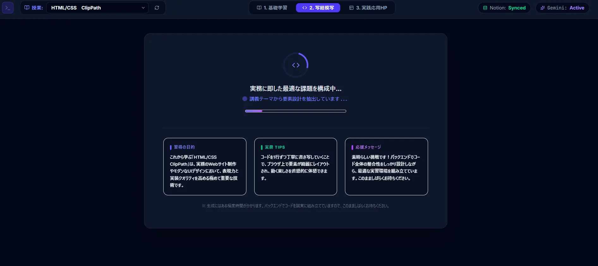

Python / AI / Notion
Loop Learning
HTML/CSS/jQueryの学習者が「最も効率よく、ストレスフリーに自習できる環境」を極限まで追求した、ひと画面完結型のeラーニングシステム。
このツールが解決すること
🎯
挫折ゼロ
コードを書く人の心理と行動を計算し尽くした優しさと直感的な操作性（UX）で、学習の離脱を防ぐ。
🔁
スモールステップ
小さな階段を確実に登る設計。反復練習を軸に、スキルを脳に確実に定着させる。
⚡
実務レベルの体感
Emmet対応で、プロが現場で使う爆速コーディングのテンポを初期段階から身体に染み込ませる。

Why It Works
「読む」から「使う」への橋渡し
機能の一覧を眺めるだけでなく、実際の画面でどう動くのかをイメージしながら読み進められるよう、要所ごとに操作画面を挟んでいます。
写経ミッションの設計思想
ただのタイピング練習で終わらせないために。7つのこだわり。
常にゴールが見える「お手本クリック連動」
お手本をクリックするだけで、そのコードの完成図がパッと表示される。目指すべきゴールをいつでも視覚的に確認でき、ワクワク感を保ちながら迷わず進められる。
迷子防止の「お手本常時表示」
写経ミッションのすぐそばに常に正しいお手本が配置される。視線の近くに「正解」があるため、集中力を1ミリも切らさずタイピングに没頭できる。
脳の理解を置き去りにしない「プレビュー知覚遅延」
変更の反映をあえて絶妙な速度に遅延。「自分が打ったこの1行で画面のここが動いた」という因果関係を、視覚的にしっかり納得しながら学習できる。
集中力を削がない「ノンフリッカーナビゲーション」
ナビゲーションのサイズを徹底計算し、どんな操作をしても画面がちらつかない・ガタつかない設計。ノイズを排除した没頭できる画面構成。

In Practice
細部にこそ、学習体験が宿る
エディタの動的な色の変化や、待ち時間を学びに変えるTips表示など、小さな工夫の積み重ねが挫折しない体験をつくっています。
実務のスピード感を体感させる「Emmet対応」
プロの現場で必須のEmmetに対応。実際のエンジニアと同じ効率的なコーディングのテンポを、初期段階から身体に染み込ませる。
領域を五感で掴む「エディタの動的ビジュアル演出」
JavaScriptを実行した際、エディタの枠線やテキストカラーが動的に変化。今自分がどのコードの領域を操作しているかを、視覚的に直感で理解できる。
待ち時間を学びに変える「インテリジェントTips」
ミッション生成時のローディング中にWeb制作の豆知識がリアルタイムで切り替わり表示。「待たされるストレス」を「新しい発見のワクワク」へ転換する。
今後の展望
現在クリアできている「写経ミッション」をベースに、ユーザーの習得レベルや進捗度をシステムが認識し、自動でお題の難易度を動的に変えていく機能の搭載を予定。初心者には手厚いサポートを、慣れてきた人にはより実践的な負荷をかける、一人ひとりに完全に最適化された「究極の自習コンソール」へと成長させていく。
ツールを試してみる
コア機能（写経ミッション）は現在稼働中です。
Loop Learning を開く →⚠️ 本ツールはAI APIの利用上限を設けています。上限に達した場合はAPIエラーが表示されることがあります。ご覧になりたい場合や面接時にご確認いただく際は、事前に一報いただければ上限を解放いたします。